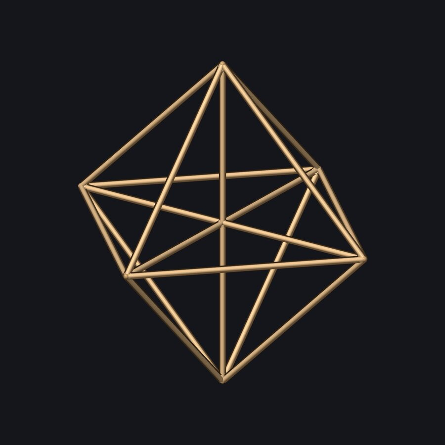
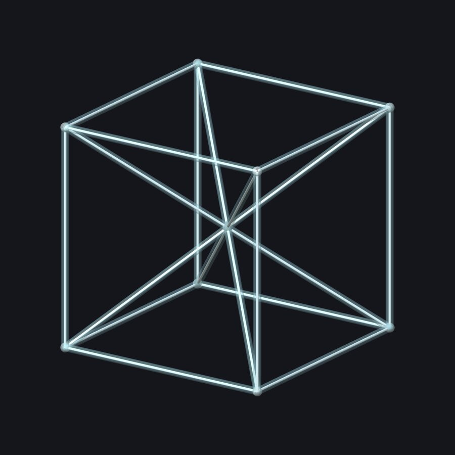
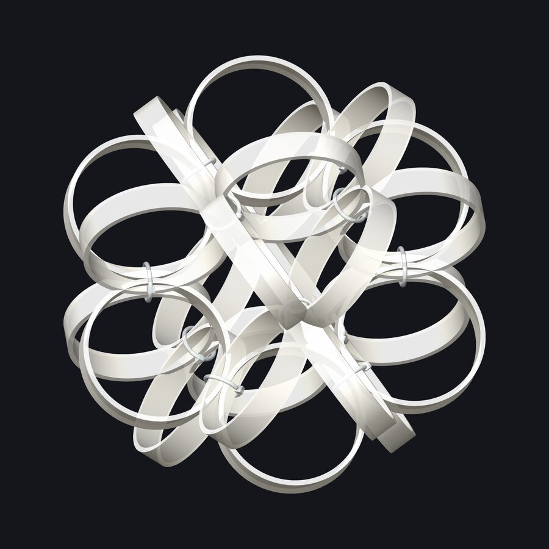
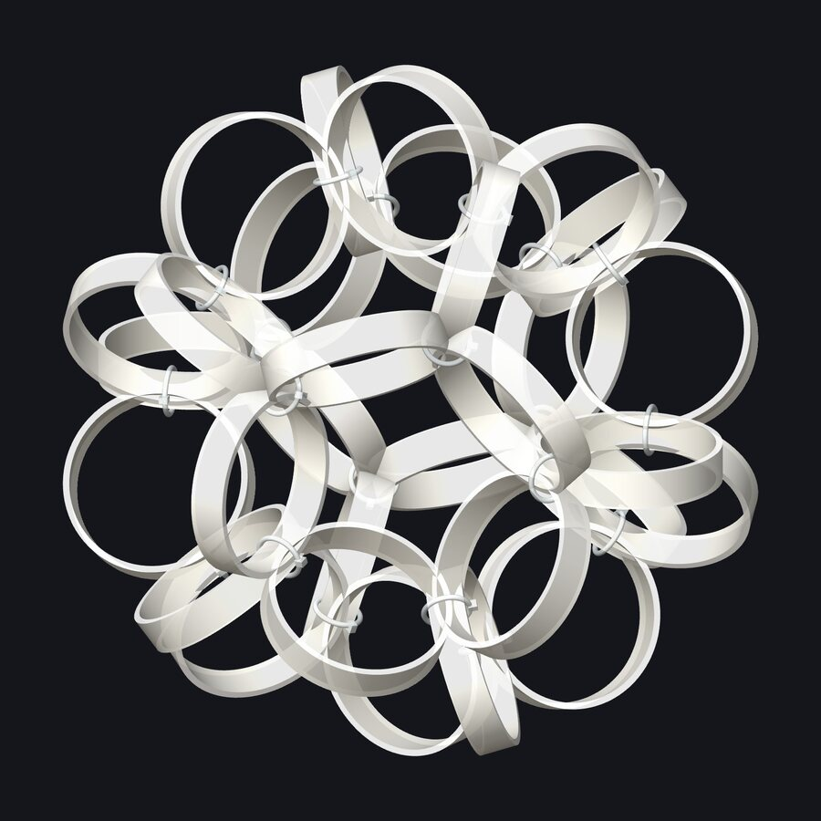

DICTO's original work
DICTO's four Vacuus builds, drawn exactly: open frameworks and bottle rings, the empty space showing.




Five qualities
- Vacuus
- Planes through the centre and each edge.
- Resonus
- Planes through the centre parallel to each face.
- Aequus
- A fair die: equal face solid angles, i.e. equal Vacuus regions.
- Tacitus
- The face directions silence the low harmonics beyond symmetry.
- Sphericus
- The circles these planes draw on the sphere, and how they cross.
See the Vacuus and the Resonus of 137 polyhedra in Polyhedraverse (open a polyhedron's details)
Aequi picker: the fair dice
DICTO · Kaleidohedra